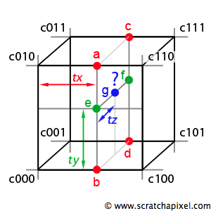

Interpolation

Figure 1: trilinear interpolation. We perform four linear interpolations to compute a, b, c and d using tx, then we compute e and f by interpolating a, b, c, d using ty and finally we find our sample point by interpolating e and f using tz.
Trilinear is a straight extension of the bilinear interpolation technique. It can be seen as the linear interpolation of two bilinear interpolations (one for the front face of the cell and one for the back face). To compute e and f we use two bilinear interpolations using the techniques described in the previous chapter. To compute g we linearly interpolate e and f along the z axis (using tz which is the z coordinate of the sample point g).
Trilinear interpolation has the same strengths and weaknesses than its 2D counterpart. It's a fast and easy to implement algorithm but it doesn't produce very smooth results. However for volume rendering or fluid simulation where a very large numbers of lookups in 3D grids are performed, it is still a very good choice.
Here is a simple example of trilinear interpolation on a grid. Note that like with bilinear interpolation, the results can be computed as a series of operations (lines xx to xx) or a sum of the 8 corners of cells weighed by some coefficients (line xx to xx).
template<typename T>
class Grid
{
public:
unsigned nvoxels; // number of voxels (cube)
unsigned nx, ny, nz; // number of vertices
Vec3<T> *data;
Grid(unsigned nv = 10) : nvoxels(nv), data(NULL)
{
nx = ny = nz = nvoxels + 1;
data = new Vec3[nx * ny * nz];
for (int z = 0; z < nz + 1; ++z) {
for (int y = 0; y < ny + 1; ++y) {
for (int x = 0; x < nx + 1; ++x) {
data[IX(x, y, z)] = Vec3(drand48(), drand48(), drand48());
}
}
}
}
~Grid() { if (data) delete [] data; }
unsigned IX(unsigned x, unsigned y, unsigned z)
{
if (!(x < nx)) x -= 1; if (!(y < ny)) y -= 1; if (!(z < nz)) z -= 1;
return x * nx * ny + y * nx + z;
}
Vec3<T> interpolate(const Vec3<T>& location)
{
T gx, gy, gz, tx, ty, tz;
unsigned gxi, gyi, gzi;
// remap point coordinates to grid coordinates
gx = location.x * nvoxels; gxi = int(gx); tx = gx - gxi;
gy = location.y * nvoxels; gyi = int(gy); ty = gy - gyi;
gz = location.z * nvoxels; gzi = int(gz); tz = gz - gzi;
const Vec3<T> & c000 = data[IX(gei, gyi, gzi)];
const Vec3<T> & c100 = data[IX(gxi + 1, gyi, gzi)];
const Vec3<T> & c010 = data[IX(gxi, gyi + 1, gzi)];
const Vec3<T> & c110 = data[IX(gxi + 1, gyi + 1, gzi)];
const Vec3<T> & c001 = data[IX(gxi, gyi, gzi + 1)];
const Vec3<T> & c101 = data[IX(gxi + 1, gyi, gzi + 1)];
const Vec3<T> & c011 = data[IX(gxi, gyi + 1, gzi + 1)];
const Vec3<T> & c111 = data[IX(gxi + 1, gyi + 1, gzi + 1)];
#if 1
Vec3<T> e = bilinear<Vec3<T> >(tx, ty, c000, c100, c010, c110);
Vec3<T> f = bilinear<Vec3<T> >(tx, ty, c001, c101, c011, c111);
return e * ( 1 - tz) + f * tz;
#else
return
(T(1) - tx) * (T(1) - ty) * (T(1) - tz) * c000 +
tx * (T(1) - ty) * (T(1) - tz) * c100 +
(T(1) - tx) * ty * (T(1) - tz) * c010 +
tx * ty * (T(1) - tz) * c110 +
(T(1) - tx) * (T(1) - ty) * tz * c001 +
tx * (T(1) - ty) * tz * c101 +
(T(1) - tx) * ty * tz * c011 +
tx * ty * tz * c111;
#endif
}
};
template<typename T>
void testTrilinearInterpolation()
{
Grid<T> grid;
for (unsigned i = 0; i < 1000; ++i) {
// create a random location
Vec3<T> result = grid.interpolate(Vec3(drand48(), drand48(), drand48()));
}
}